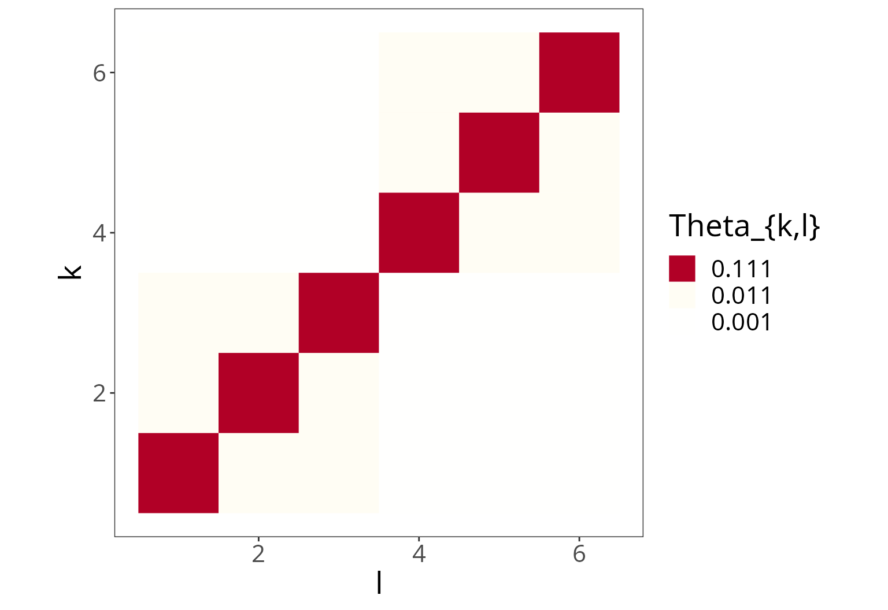
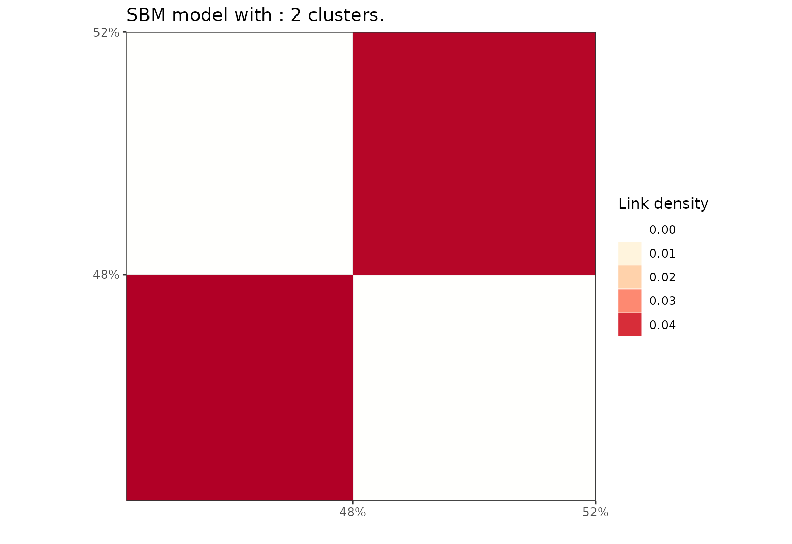
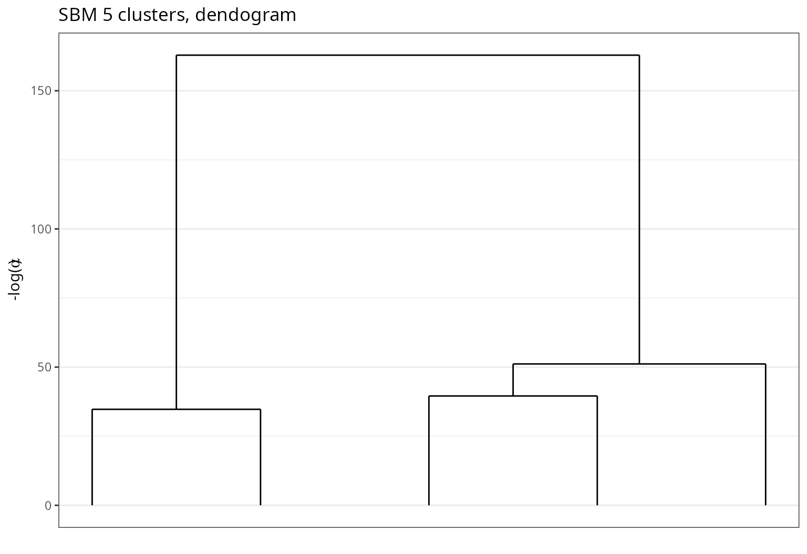
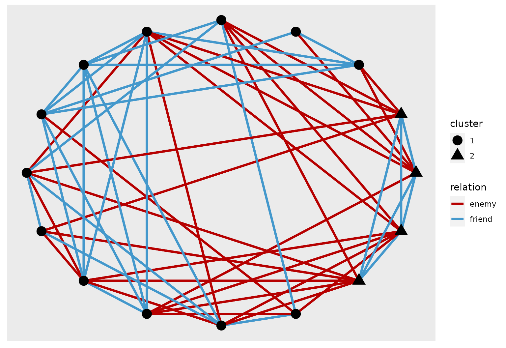
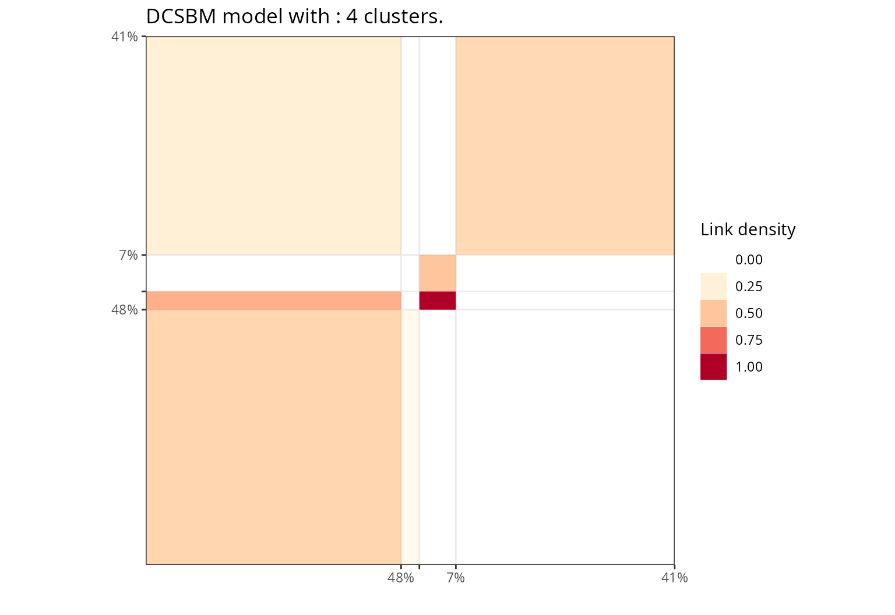

vignettes/SBM.Rmd
SBM.RmdLoads packages and set a future plan for parallel processing.
library(future)
library(Matrix)
library(ggplot2)
library(greed)
library(dplyr)
library(ggpubr)
set.seed(2134)
future::plan("multisession", workers=2) # may be increased Graph data arise in various scientific fields from biology to sociology, and accounts for relationship between objects. These objects are expressed as nodes, while a relationship between two objects is expressed as an edge. Hence, graph data may be expressed and stored in an adjacency matrix \(\mathbf{X} = \{ x_{ij} \}\) where \(x_{ij}=1\) means that objects \(i\) and \(j\) are connected. Weighted versions are also possible.
The stochastic block model (SBM) is a random graph model of the adjacency matrix \(\mathbf{X}\) widely used for graph clustering. In this model, the probability of an edge \((i,j)\) is driven by the cluster membership of node \(i\) and \(j\), hence the block terminology.
It can be expressed in the DLVMs framework and the greed package handles this model and its degree-corrected variant, while implementing efficient visualization tools for the clustering results that we detail below. The Bayesian formulation of a binary SBM is as follows
\[\begin{equation} \label{eq:sbm} \begin{aligned} \pi&\sim \textrm{Dirichlet}_K(\alpha),\\ \theta_{k,l} & \sim \textrm{Beta}(a_0, b_0), \\ Z_i&\sim \mathcal{M}(1,\pi),\\ \forall (i,j), \quad x_{ij} \mid Z_{ik}Z_{jl}=1& \sim \mathcal{B}(\theta_{k,l}). \end{aligned} \end{equation}\]This model class is implemented in the ?Sbm class. Here, the model hyperparameters are:
Sbm.Note that the greed package also handles the degree-corrected variant of SBM in the ?dcSbm class, allowing for integer valued edges. The underlying model and its DLVM formulation is described in depth in the Supplementary Materials of Côme et. al..
We begin by simulating from a hierarchically structured SBM model, with 2 large clusters, each composed of 3 smaller clusters with higher connection probabilities, making a total of 6 clusters.
N=400
K=6
pi=rep(1/K,K)
lambda = 0.1
lambda_o = 0.01
Ks=3
mu = bdiag(lapply(1:(K/Ks), function(k){
matrix(lambda_o,Ks,Ks)+diag(rep(lambda,Ks))}))+0.001
sbm = rsbm(N,pi,mu)
As always, we perform the clustering using the greed() function with an Sbm model. Note that we need to specify the Sbm model, since for squared sparse matrix the default model used is a DcSbm. By default, the hybrid genetic algorithm is used, and its default hyperparameters are detailed in ?`Hybrid-class`.
sol = greed(sbm$x,model = Sbm())
#>
#> ── Fitting a guess SBM model ──
#>
#> ℹ Initializing a population of 20 solutions.
#> ℹ Generation 1 : best solution with an ICL of -14119 and 6 clusters.
#> ℹ Generation 2 : best solution with an ICL of -14119 and 6 clusters.
#> ── Final clustering ──
#>
#> ── Clustering with a SBM model 6 clusters and an ICL of -14119We see that the fine-grained clustering structure with \(K=6\) clusters is recovered.
The result of greed is stored as an S4 class and, as for any model, there are dedicated function to access its attributed. A quick summary of these functions is indicated in the display of the sol object as follows
sol
#>
#> ── Clustering with a SBM model 6 clusters and an ICL of -14119 ──
#>
#> ℹ Generic methods to explore a fit:
#> • ?clustering, ?K, ?ICL, ?prior, ?plot, ?cut, ?coefThe clustering() function allows to return the estimated partition. The K() and ICL() functions return the final number of clusters and ICL value respectively.
table(sbm$cl,clustering(sol))| 1 | 2 | 3 | 4 | 5 | 6 | |
|---|---|---|---|---|---|---|
| 1 | 0 | 63 | 0 | 0 | 0 | 0 |
| 2 | 0 | 0 | 66 | 0 | 0 | 0 |
| 3 | 64 | 0 | 0 | 0 | 0 | 0 |
| 4 | 0 | 0 | 0 | 0 | 0 | 79 |
| 5 | 0 | 0 | 0 | 60 | 0 | 0 |
| 6 | 0 | 0 | 0 | 0 | 68 | 0 |
The Maximum a Posteriori (MAP) estimation of \(\theta\) and \(\pi\) is available through the coef() function. Note that the MAP is computed conditionally to the estimated partition returned by greed.
coef(sol)
#> $pi
#> [1] 0.1600 0.1575 0.1650 0.1500 0.1700 0.1975
#>
#> $thetakl
#> [,1] [,2] [,3] [,4] [,5]
#> [1,] 0.1188964844 0.0114087302 0.0099431818 0.0013020833 0.0013786765
#> [2,] 0.0133928571 0.1128747795 0.0086580087 0.0002645503 0.0002334267
#> [3,] 0.0116003788 0.0098605099 0.1090449954 0.0017676768 0.0013368984
#> [4,] 0.0007812500 0.0007936508 0.0015151515 0.1136111111 0.0080882353
#> [5,] 0.0006893382 0.0009337068 0.0013368984 0.0142156863 0.1150519031
#> [6,] 0.0009889241 0.0006027728 0.0007671653 0.0099156118 0.0111690246
#> [,6]
#> [1,] 0.0013844937
#> [2,] 0.0006027728
#> [3,] 0.0003835827
#> [4,] 0.0111814346
#> [5,] 0.0107967238
#> [6,] 0.1046306682The greed package also comes with efficient visualization tools for summarization and exploration. For graph data, it allows to:
K(sol) to 1 with the required level of regularization \(\log(\alpha)\).Note that, in each case, the ordering of the clusters given by the hierarchical algorithm is used and greatly enhances the visualization by highlighting the hierarchical structure in the data.
plot(sol,type='nodelink')Eventually, we can cut the dendrogram at any level below K(sol) to easily access other partitions in the hierarchy. Here, we access the coarser at \(K=2\) and we can still use the different plot() functions to visualize these other solutions.

Choosing relevant level(s) to cut the dendrogram may be challenging and the greed package also provides graphical tools to help the user decide based on a chosen heuristics.
plot(sol,type='path')
plot(sol,type='front')Here, we compare models with and without degree correction on DcSbm simulation (see ?rdcsbm).
sim_dcsbm <- rdcsbm(N,pi,mu,round(rexp(N,1/15)),round(rexp(N,1/15)))
X <- sim_dcsbm$x
X[X>1] <- 1
sol_dcsbm <- greed(X,model = DcSbm())
#>
#> ── Fitting a guess DCSBM model ──
#>
#> ℹ Initializing a population of 20 solutions.
#> ℹ Generation 1 : best solution with an ICL of -11667 and 6 clusters.
#> ℹ Generation 2 : best solution with an ICL of -11667 and 6 clusters.
#> ── Final clustering ──
#>
#> ── Clustering with a DCSBM model 6 clusters and an ICL of -11667
sol_sbm <- greed(X,model = Sbm())
#>
#> ── Fitting a guess SBM model ──
#>
#> ℹ Initializing a population of 20 solutions.
#> ℹ Generation 1 : best solution with an ICL of -12764 and 13 clusters.
#> ℹ Generation 2 : best solution with an ICL of -12590 and 11 clusters.
#> ℹ Generation 3 : best solution with an ICL of -12572 and 11 clusters.
#> ℹ Generation 4 : best solution with an ICL of -12564 and 11 clusters.
#> ℹ Generation 5 : best solution with an ICL of -12564 and 11 clusters.
#> ── Final clustering ──
#>
#> ── Clustering with a SBM model 11 clusters and an ICL of -12564As expected the degree corrected version did a better job as the ICL value suggest. Indeed, without degree correction, the model has to use more groups to fit the degree heterogeneity.
The Books dataset was gathered by Valdis Krebs and is attached to the greed package. It consist of a co-purchasing network of \(N=105\) books on US politics. Two books have an edge between them if they have been frequently co-purchased together. We have access to the labels of each book according to its political inclination: conservative (“n”), liberal (“l”) or neutral (“n”).
data(Books)
sol_dcsbm = greed(Books$X,model = DcSbm())
#>
#> ── Fitting a guess DCSBM model ──
#>
#> ℹ Initializing a population of 20 solutions.
#> ℹ Generation 1 : best solution with an ICL of -1346 and 4 clusters.
#> ℹ Generation 2 : best solution with an ICL of -1346 and 4 clusters.
#> ── Final clustering ──
#>
#> ── Clustering with a DCSBM model 3 clusters and an ICL of -1345
sol_dcsbm
#>
#> ── Clustering with a DCSBM model 3 clusters and an ICL of -1345 ──
#>
#> ℹ Generic methods to explore a fit:
#> • ?clustering, ?K, ?ICL, ?prior, ?plot, ?cut, ?coef
sol_sbm = greed(Books$X,model = Sbm())
#>
#> ── Fitting a guess SBM model ──
#>
#> ℹ Initializing a population of 20 solutions.
#> ℹ Generation 1 : best solution with an ICL of -1251 and 6 clusters.
#> ℹ Generation 2 : best solution with an ICL of -1251 and 6 clusters.
#> ℹ Generation 3 : best solution with an ICL of -1251 and 6 clusters.
#> ── Final clustering ──
#>
#> ── Clustering with a SBM model 5 clusters and an ICL of -1249
sol_sbm
#>
#> ── Clustering with a SBM model 5 clusters and an ICL of -1249 ──
#>
#> ℹ Generic methods to explore a fit:
#> • ?clustering, ?K, ?ICL, ?prior, ?plot, ?cut, ?coefThe network as been automatically recognized as an undirected graph, as we can see see in the fitted models prior:
For this dataset, the regular SBM model seems to reach a better ICL solution than its degree-correction variant. Still, we can visualize both aggregated adjacency matrices and the dendrogram.
bl_sbm = plot(sol_sbm,type='blocks')
bl_dcsbm = plot(sol_dcsbm,type='blocks')
ggarrange(bl_sbm,bl_dcsbm)
plot(sol_sbm,type='tree')
It is also possible to use external R packages to plot the graph layout with node color as clusters and node size as book popularity (computed using centrality degree). Here, we represent the result for the SBM solution with 5 clusters. One can see a hierarchical clustering structure appearing, with a central cluster of neutral books in-between two densily connected set. In each of these two dense set, there is a clear distinction between popular books (heavily purchase) and more peripheric ones, indicated by node size.
library(ggraph)
library(tidygraph)
library(igraph)
graph <- igraph::graph_from_adjacency_matrix(Books$X) %>% as_tbl_graph() %>%
mutate(Popularity = centrality_degree()) %>%
activate(nodes) %>%
mutate(cluster=factor(clustering(sol_sbm),1:K(sol_sbm)))
# plot using ggraph
ggraph(graph, layout = 'kk') +
geom_edge_link() +
geom_node_point(aes(size = Popularity,color=cluster))Finally, we can look at both models solutions for \(K=3\) and their confusion matrix. We see that both partition make sense according to the available political label.
|
|
Sometimes, a graph accounts for more complex interactions between object such as 1. categorical relationship instead of solely binary 2. multidimensional/multilayered relationships encoded by different graphs (e.g. work relation and friendship)
The first case can be adressed in the SBM framework via a multinomial SBM model. The second is different since there are different layer or views of the data. Still, the greed package may handle this type of data via its MixedModels framework where user simply stacks the DLVM of its choice on each view of the data (for more info see the dedicated vignette on Mixed Models).
The SBM framework allows virtually any distribution on the edges, hence allowing to handle categorical edges modeled as multinomial random variables. With the right choice of conjugate Dirichlet priors, this model admits an exact ICL formulation which allows to use the greed framework. This model is implemented in the MultSbm S4 class and we illustrate its use on a toy data set consisting in interactions between \(n=16\) tribes. This interaction can be one of 3 types: ennemies, friends or no relation. These are encoded as 3 dimensional one-hot vectors in the NewGuinea dataset.
sol_newguinea = greed(NewGuinea,model=MultSbm())
#>
#> ── Fitting a guess MULTSBM model ──
#>
#> ℹ Initializing a population of 20 solutions.
#> ℹ Generation 1 : best solution with an ICL of -125 and 2 clusters.
#> ℹ Generation 2 : best solution with an ICL of -125 and 2 clusters.
#> ℹ Generation 3 : best solution with an ICL of -125 and 2 clusters.
#> ── Final clustering ──
#>
#> ── Clustering with a MULTSBM model 2 clusters and an ICL of -125To each modality (or slice), we can associate a binary graph corresponding the interaction, and plot its he aggregated adjacency matrix. The multiple views allow to interpret the clusters in term of the modalities. In this example, we have three slices corresponding to the three modalities and :
To sum up, the algorithm found \(K=2\) groups/clusters. One is composed of a small, densely connected community of friend tribes, whereas the other is larger and more heterogeneous with mostly no interactions between the tribes. The two clusters either have enmity relations or no relation at all.
plot(sol_newguinea,type='blocks')To further the analysis, it is possible to visualize the two graphs of enmity and friendships on top of each other. The node shape symbolizes the cluster, while the color of the edge characterizes the modality. One can see that the small cluster makes a 4-node clique for friendship while having a strongly pronounced bi-partite structure for enmity, hence consistent with the previous analysis.
enemies = as.data.frame(which(NewGuinea[,,1]==1,arr.ind = TRUE)) %>%
mutate(relation="enemy")
friends = as.data.frame(which(NewGuinea[,,2]==1,arr.ind = TRUE)) %>%
mutate(relation="friend")
edges = rbind(enemies,friends)
graph = tbl_graph(edges=edges,nodes=data.frame(id=1:16,cluster=factor(clustering(sol_newguinea))))
# plot using ggraph
ggraph(graph, layout = 'kk', weights = if_else(relation=="friends",1,0)) +
geom_edge_link(aes(color=relation),width=1.2) +
scale_edge_color_manual(values = c("friend"="#4398cc","enemy"="#b60000"))+
geom_node_point(aes(shape=cluster),size=5)As explained above, some graphs may encode different kinds of relationships. This general case of multidimensional network correspond to a 3-dimensional encoding \(V\) different graphs. Note that graphs with multinomial edges are a particular case where an edge \((i,k)\) can only belong to one of the views.
In the perspective of graphs clustering, we search for one common partition of the nodes among the different graphs. From the statistical point-of-view of the DLVMs framework, it amounts to stack observational models (i.e. SBM, dc-SBM, MultinomialSBM, etc.) on each of the graphs, that are supposed independent conditionally on the unknown partitions :
\[\begin{equation} p(G_1, \ldots, G_V \mid Z) = p(G_1 \mid Z) \times \ldots \times p(G_V \mid Z). \end{equation}\]The ICL of the whole dataset is then simply the sum of the individual ICL of the V models.
The greed package implements this modelization via the ?`MixedModels-class. We refer to the dedicated vignettes for more details but, from a practical perspective, one need to specify the \(V\) observational models in a named list, and the data (here the \(V\) adjacency matrices) in a list sharing the same names. Here is an example on the NewGuinea dataset analyzed above, with \(V=2\) views corresponding to enmity and friendship. We put a default dcSBM model on both views and provide the two corresponding adjacency matrix as data.
mod <- MixedModels(list(friends = DcSbmPrior(), enmy = DcSbmPrior()))
data <- list(friends = NewGuinea[, , 2], enmy = NewGuinea[, , 1])
sol_bidcsbm <- greed(data, model = mod, K = 5)
#>
#> ── Fitting a MIXEDMODELS model ──
#>
#> ℹ Initializing a population of 20 solutions.
#> ℹ Generation 1 : best solution with an ICL of -151 and 2 clusters.
#> ℹ Generation 2 : best solution with an ICL of -151 and 2 clusters.
#> ── Final clustering ──
#>
#> ── Clustering with a MIXEDMODELS model 2 clusters and an ICL of -151Practicalities: The
MixedModelclass allows any list of observational models. However, they need to be initiated via the following syntax:<your_desired_model>Prior(). Without going into technical details, this is necessary to account for the shared aspect of the partition \(Z\) between all models.
The algorithm finds \(K=2\) clusters here. Since each views has its own obersvational model, it is possible to use the ?extractSubModel() function to retrieve the fitted observational model for each view. Then, traditional visualization tools may be used. Here, we display the block representation of the clustering for the two modalities, highlighting a pronouced community structure in the friendship modality and a strong bipartite structure in the enmity modality as before, with no enmity link in the small cluster and few amongst the tribes of the bigger one.
bl_friends = plot(extractSubModel(sol_bidcsbm,"friends"),type="blocks") + ggtitle("Friendship")
bl_enmy = plot(extractSubModel(sol_bidcsbm,"enmy"),type="blocks") + ggtitle("Enmity")
ggarrange(bl_friends,bl_enmy)
The ?SevenGraders dataset illustrates the interest of multidimensional graphs clustering. There are 3 different relationship (class, best-friends and work) recorded between 29 seventh-grade students in Victoria, Australia. We also have access to the gender of each student: 1 to 12 are boys and 13 to 29 are girls.
We are interested in finding an underlying partition explaining these \(3\) kinds of relationships. Again, we put a DcSbmPrior model for each view, and provide the models and views as named lists with the same names.
mod <- MixedModels(list(class = DcSbmPrior(), friends = DcSbmPrior(), work = DcSbmPrior()))
data <- list(class = SevenGraders[, , 1], friends = SevenGraders[, , 2], work = SevenGraders[, , 3])
sol <- greed(data, model = mod, K = 5)
#>
#> ── Fitting a MIXEDMODELS model ──
#>
#> ℹ Initializing a population of 20 solutions.
#> ℹ Generation 1 : best solution with an ICL of -1516 and 3 clusters.
#> ℹ Generation 2 : best solution with an ICL of -1514 and 4 clusters.
#> ℹ Generation 3 : best solution with an ICL of -1514 and 4 clusters.
#> ── Final clustering ──
#>
#> ── Clustering with a MIXEDMODELS model 4 clusters and an ICL of -1514Here, the algorithm found \(K=4\) clusters and we can look at the block matrix representation of the work relation graph.
plot(extractSubModel(sol, "work"), type = "blocks")
This section is still in construction. See ?`DcLbm-class` for further information on co-clustering with the degree corrected Latent Block Model.